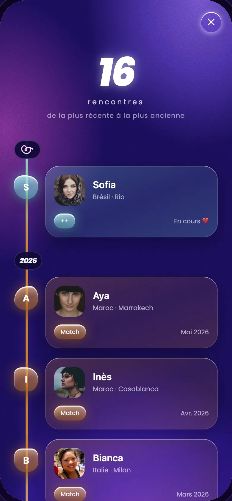
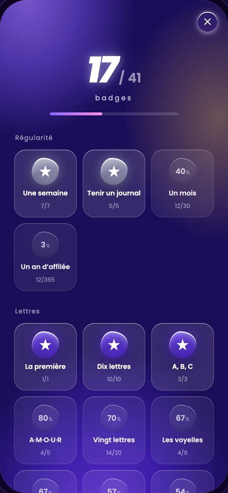

Web & Apps

Site de lancement Cupidex
Juillet 2026
Une application de rencontre où chaque rencontre rejoint une collection
Cupidex reprend les codes des applications de swipe pour les détourner vers un objectif de collection : chaque rencontre remplit un Cupidex personnel, classé par la première lettre du prénom, avec des lettres rares, des badges qui évoluent et des séries à tenir. Frostbird conçoit l'application de bout en bout : concept, design, application iOS et Android, et le serveur qui la fait tourner. Le projet est en cours : l'application est en phase de tests avant sa sortie sur les stores.
Détourner le swipe vers la collection : une lettre par prénom, des lettres rares, des badges du match jusqu'à la relation.
Un prototype cliquable de tous les écrans, puis une direction « verre liquide » en violet et rose.
Une application React Native pour iOS et Android, et une API Spring Boot : profils, matchs, messagerie, collection, modération.
Une nouvelle version testée chaque semaine sur un serveur de recette, jusqu'au lancement sur les stores.

« Collectionne l'amour » : l'application donne le ton dès l'ouverture.

Le swipe, version Cupidex : l'essentiel d'un profil en un coup d'œil.

Le cœur de l'application : une collection de lettres, des plus courantes aux plus rares.

L'historique : toutes les rencontres sur une frise, de la plus récente à la plus ancienne.

Les badges : régularité, lettres, pays… tout ce qu'il reste à décrocher, avec l'avancée de chacun.

La carte des conquêtes : un globe où chaque pays rencontré s'allume.

Ceux qui t'ont liké, mis en avant selon les lettres qui te manquent.
Juillet 2026
Septembre 2026